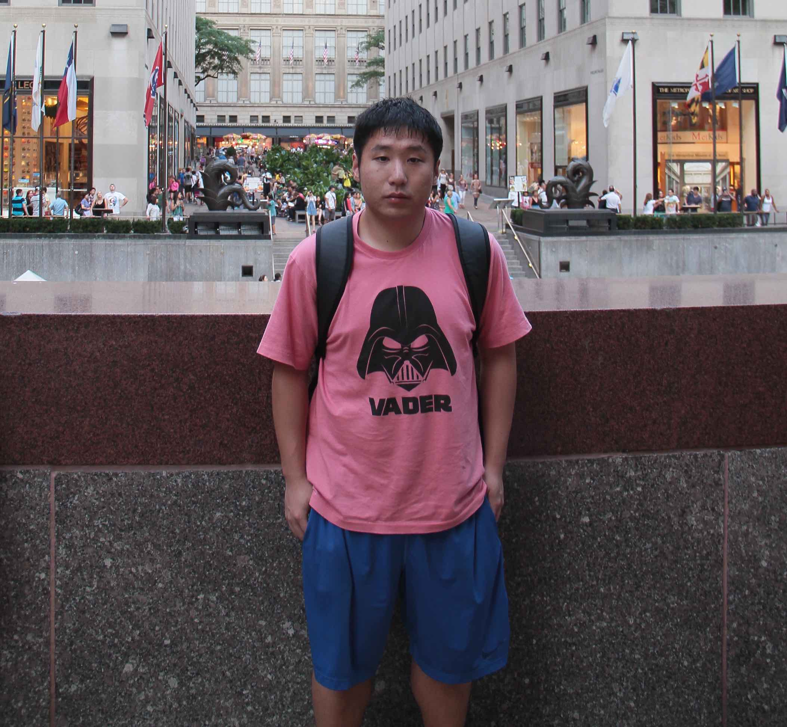

Ph.D. Candidate
Rm 120, Ho Sin-Hang Engineering Building,
Department of Computer Science & Engineering,
The Chinese University of Hong Kong,
Shatin, N.T, Hong Kong
Email: qliu [at] cse.cuhk.edu.hk
[Blog]
[GitHub]
[Curriculum Vitae]
[Calendar]
Publications
- Jiefeng Cheng, Qin Liu, Zhenguo Li, Wei Fan, John C.S. Lui, Cheng
He.
``VENUS: Vertex-Centric Streamlined Graph Computation on a Single
PC''.
In the 31st IEEE International Conference on Data Engineering (ICDE 2015).
Seoul, Korea. April 13 - 17, 2015.
[Paper]
[Slides]
[Poster]
- Qin Liu, John C.S. Lui, Cheng He, Lujia Pan, Wei Fan, Yunlong Shi.
``SAND: A Fault-Tolerant Streaming Architecture for Network Traffic
Analytics''.
In the 44th Annual IEEE/IFIP International Conference on Dependable Systems
and Networks (DSN 2014) (Practical experience report). Atlanta, Georgia,
USA. June 23 - 26, 2014.
[Paper]
[Slides]
- Tianqi Chen, Linpeng Tang, Qin Liu, Diyi Yang, Saining Xie, Xuezhi Cao,
Chunyang Wu, Enpeng Yao, Zhengyang Liu, Zhansheng Jiang, Cheng Chen, Weihao
Kong, Yong Yu.
``Combining Factorization Model and Additive Forest for Collaborative
Followee Recommendation''.
In KDD Cup 2012 Workshop (1st place in track 1). Beijing, China.
August 12, 2012.
[Paper]
[Slides]
[Project Page]
Awards
- We (ACMClass@SJTU) achieved the 1st place in track 1 of
KDD Cup 2012 (Leaderboard). Beijing, China. 2012.
- Silver Medal (38th place) in National Olympiad in Informatics
(NOI). Fuzhou, China. 2007.
Selected Projects
Course Projects:
- Graduation Project: PaintingFinder (a sketch-based image search engine).
- Artificial Intelligence:
SuperGo (computer Go program).
Go (Chinese: 圍棋 wéiqí) is a board game for two players that originated in China more than 2,500 years ago.
- Operating Systems: Nachos.
- Compilers: Tiger.
Teaching Experience
At
The Chinese University of Hong Kong:
I served as a teaching assistant/fellow for the
ACM Honored Class at
Shanghai Jiao Tong University:
Courses
At
The Chinese University of Hong Kong:
Resources
Some useful resources.
- The ZeroMQ Guide - v3.2
[C]
[Python]
(updated July 15, 2013).